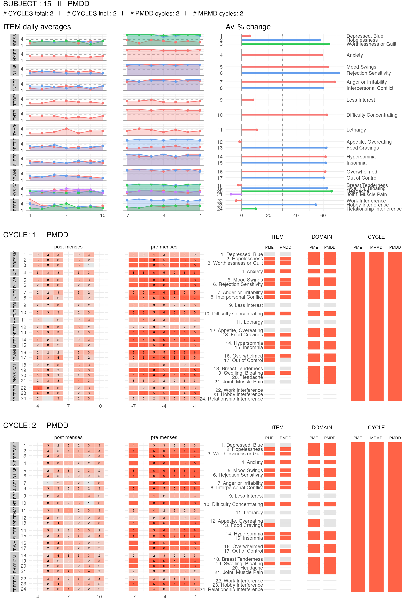
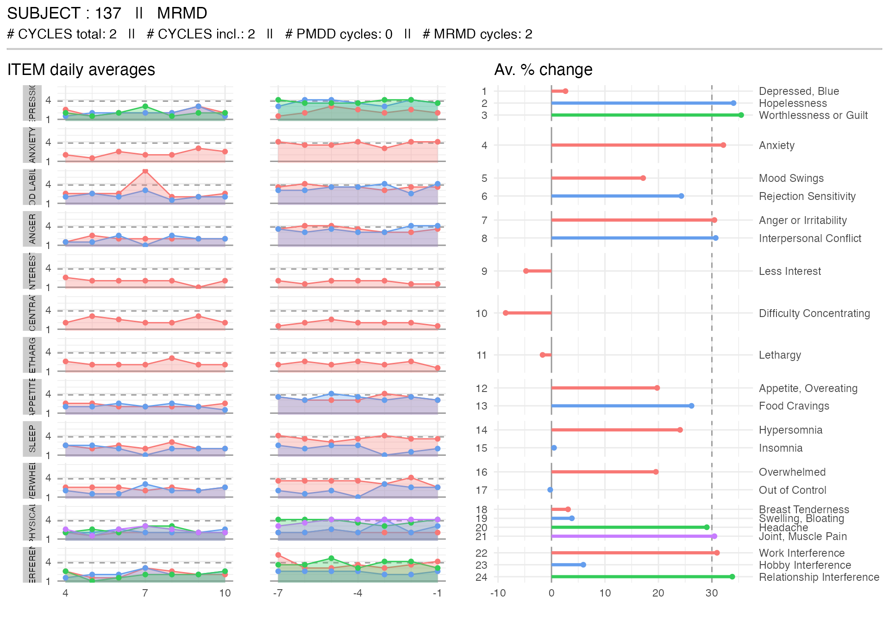
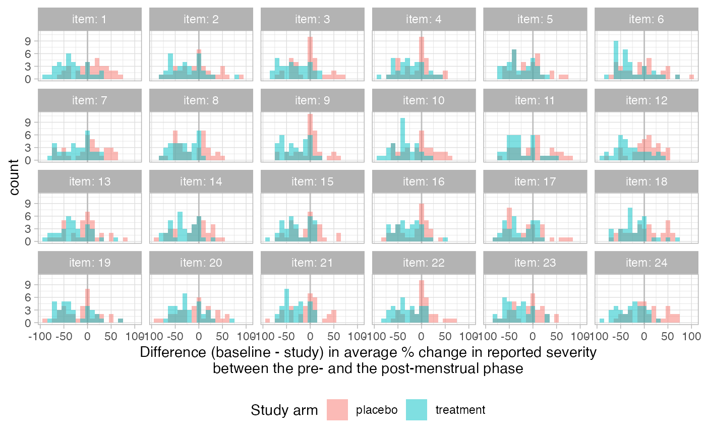

cpass package on study
datafictive-study.Rmd
library(cpass)
library(dplyr)
library(tidyr)
library(ggplot2)
library(readr)
theme_set(theme_light()) # viz options
set.seed(1) # for reproducibilityIn this vignette, we simulate, then analyze, data in the context of a fictive study. This fictive study aims at evaluating the efficacy of a new treatment and comparing it to a placebo.
Recruitment: patients complaining about (worsening of) symptoms in their luteal phase
Pre-enrollment phase: participants are asked to report their DRSP for two cycles
Inclusion criteria: participants must meet diagnosis for PMDD
Study phase: 50% of the participants are given the new treatment, rest is given a placebo. After 3 cycles of treatment, participants are asked to report their DRSP again for two cycles.
Analysis: we evaluate the benefit of the new treatment compared to the placebo.
Here, we simulate data for 240 subjects. These data are simulated such that each subject has a specific level symptoms at baseline, specific levels of symptoms worsening in their pre-menstrual week, and a specific number of items (symptoms) worsening in their pre-menstrual phase. They are simulated such that some, but not all, subjects meet criteria for PMDD. This is what would be expected in an actual study during the screening (and prospective validation) phase.
# we simulate data for 240 subjects
n_subjects = 240
# the simulate_cpass_data function is part of the cpass package
# type "?simulate_cpass_data" for documentation
pre_data <-
simulate_cpass_data(
n_subjects = n_subjects,
# we simulate 2 cycles for each subject
n_cycles = 2,
# baseline for each subject
baseline = rnorm(n_subjects, mean = 2, sd = 1),
# % increase in symptoms
pmdd_intensity = rnorm(n_subjects, mean = 0.35, sd = 0.25),
# number of items that vary in the pre-menstrual phase
n_items = sample(1:24, n_subjects, replace = TRUE,
prob = dnorm(1:24, mean = 15, sd = 5)),
# fraction of days without data (e.g. participants forgot to report)
missingness_rate = 0.2
)
# write_csv(pre_data, "data/pre_data.csv")
# The function above exports data into a .csv file.Before applying the cpass function on our data, we first
need to format the data.
# pre_data <-
# read_csv("data/pre_data.csv",
# show_col_types = FALSE)
# to do a quick exploration of these data, try
# View(pre_data)
# head(pre_data)
# summary(pre_data)
# below, we transform the data into a "long" table
# where there is one row per subject x cycle x cycleday x item
pre_data_long <-
pre_data %>%
pivot_longer(cols = starts_with("item_"),
names_to = "item",
values_to = "drsp_score",
names_prefix = "item_") %>%
mutate(item = item %>% as.integer())
# finally, we use the `as_cpass_data` function, which checks the data
# and prepare them for the `cpass` function (see next chunk)
pre_data_cpass_format <-
as_cpass_data(pre_data_long, sep_event = "ovulation")
#> Number of subjects: 240
#> Total number of cycles: 480
#> Percentage of missing scores: 20.31 %
#> Percentage of missing scores
#> (in pre- & post-menstrual phases): 20.31 %Now that data are formatted, we can apply the cpass
function.
pre_data_cpass <-
cpass(pre_data_cpass_format)
#> PME diagnosis is still experimental and has not been validated clinically. Please, use with caution.The first thing we can check is the number of participants that meet the PMDD criteria. The table below shows the number of participants with no diagnosis, a MRMD, PMDD or a PME diagnosis.
| . | n |
|---|---|
| no diagnosis | 92 |
| MRMD | 30 |
| PMDD | 68 |
| PME | 20 |
We can also plot the distribution of average percent change for one of the items for all participants, grouping them by diagnosis.
pre_data_cpass$summary_item %>%
filter(item == 1) %>%
left_join(
.,
pre_data_cpass$subject_level_diagnosis,
by = "subject"
) %>%
ggplot(., aes(x = ave_perc_change, fill = dx)) +
geom_histogram(position = "identity", alpha = 0.4, binwidth = 5) +
xlab("Average % change for item 1") +
facet_grid(dx ~ ., scales = "free_y") +
guides(fill = "none") +
theme(strip.text.y = element_text(angle = 0, hjust = 0))We see that not all PMDD participant have a 30% increase in symptoms for the 1st item. These participants have a 30+% increase in other items.
We can also plot the item summary and reported data for specific participants. Here, we show the subject’s data visualization for two subjects: one that meets the PMDD diagnosis criteria, and one that does not meet any criteria.
get_random_subject <- function(subjects_data, diagnosis){
subjects_data %>%
filter(dx == diagnosis) %>%
select(subject) %>%
sample_n(size = 1) %>%
unlist()
}
pmdd_subject <-
get_random_subject(pre_data_cpass$subject_level_diagnosis, "PMDD")
no_dx_subject <-
get_random_subject(pre_data_cpass$subject_level_diagnosis, "no diagnosis")
plot_subject_data_and_dx(
data = pre_data_cpass_format %>% filter(subject == pmdd_subject),
save_as_pdf = FALSE
)
#> PME diagnosis is still experimental and has not be validated clinically. Please, use with caution.
plot_subject_data_and_dx(
data = pre_data_cpass_format %>% filter(subject == no_dx_subject),
save_as_pdf = FALSE
)
#> PME diagnosis is still experimental and has not be validated clinically. Please, use with caution.
mrmd_subject <-
get_random_subject(pre_data_cpass$subject_level_diagnosis, "MRMD")
plot_subject_dx(
data = pre_data_cpass_format %>% filter(subject == mrmd_subject)
)
plot_subject_cycle_obs(
data =
pre_data_cpass_format %>%
filter(subject == mrmd_subject,
cycle == 1)
)
#> PME diagnosis is still experimental and has not be validated clinically. Please, use with caution.
plot_subject_cycle_obs(
data =
pre_data_cpass_format %>%
filter(subject == mrmd_subject,
cycle == 2)
)
#> PME diagnosis is still experimental and has not be validated clinically. Please, use with caution.Here we select the participants who meet PMDD criteria and we randomly assign them to one of the two study arms (treatment or placebo)
subjects_with_pmdd <-
pre_data_cpass$subject_level_diagnosis %>%
filter(dx == "PMDD") %>%
select(subject, avgdsm5crit) %>%
mutate(study_arm =
sample(
c(rep("placebo",floor(n()/2)),
rep("treatment",ceiling(n()/2))),
size = n())
)
subjects_with_pmdd$study_arm %>% table() %>% as_tibble() %>% knitr::kable()| . | n |
|---|---|
| placebo | 34 |
| treatment | 34 |
In this section, we simulate the study data. We simulate these data such that participants in the “treatment” arm experience lower increase in symptoms in their pre-menstrual week and less symptoms with increased severity than those in the “placebo” arm.
n_placebo <- (subjects_with_pmdd$study_arm == "placebo") %>% sum()
post_placebo <-
simulate_cpass_data(
n_subjects = n_placebo,
n_cycles = 2,
pmdd_intensity = rnorm(n = n_placebo, mean = 0.5, sd = 0.25),
baseline = rnorm(n_placebo, mean = 1, sd = 1),
n_items = sample(1:24, n_placebo, replace = TRUE,
prob = dnorm(1:24, mean = 15, sd = 5)),
missingness_rate = 0.1
) %>%
rename(subject_nb = subject) %>%
mutate(study_arm = "placebo") %>%
left_join(
.,
subjects_with_pmdd %>%
filter(study_arm == "placebo") %>%
select(subject, subject_nb),
by = "subject_nb")
n_treatment <- (subjects_with_pmdd$study_arm == "treatment") %>% sum()
post_treatment <-
simulate_cpass_data(
n_subjects = n_treatment,
n_cycles = 2,
pmdd_intensity = rnorm(n = n_treatment, mean = 0.2, sd = 0.25),
baseline = rnorm(n_treatment, mean = 1, sd = 1),
n_items = sample(1:24, n_treatment, replace = TRUE,
prob = dnorm(1:24, mean = 8, sd = 5)),
missingness_rate = 0.1
) %>%
rename(subject_nb = subject) %>%
mutate(study_arm = "treatment") %>%
left_join(
.,
subjects_with_pmdd %>%
filter(study_arm == "treatment") %>%
select(subject, subject_nb),
by = "subject_nb")
study_data <-
bind_rows(
post_placebo,
post_treatment
)
# write_csv(study_data, "data/study_data.csv") # save the data as csv fileSimilarly as for the screening data, we first format the study data.
#study_data <-
# read_csv("data/study_data.csv",
# show_col_types = FALSE)
# to do a quick exploration of these data, try
# View(study_data)
# head(study_data)
# summary(study_data)
# below, we transform the data into a "long" table
# where there is one row per subject x cycle x cycleday x item
study_data_long <-
study_data %>%
pivot_longer(cols = starts_with("item_"),
names_to = "item",
values_to = "drsp_score",
names_prefix = "item_") %>%
mutate(item = item %>% as.integer())
# finally, we use the `as_cpass_data` function, which checks the data
# and prepare them for the `cpass` function (see next chunk)
study_data_cpass_format <-
as_cpass_data(study_data_long, sep_event = "ovulation")
#> Number of subjects: 68
#> Total number of cycles: 136
#> Percentage of missing scores: 10.29 %
#> Warning in as_cpass_data(study_data_long, sep_event = "ovulation"): The 'phase' column will be over-written
#> Percentage of missing scores
#> (in pre- & post-menstrual phases): 10.29 %Now that data are formatted, we can apply the cpass
function.
study_data_cpass <-
cpass(study_data_cpass_format)
#> PME diagnosis is still experimental and has not been validated clinically. Please, use with caution.We can now check the number of participants that still meet PMDD criteria in the two study arms
subject_dx_study_cycles <-
study_data_cpass$subject_level_diagnosis %>%
left_join(subjects_with_pmdd %>% select(subject, study_arm), by = "subject")
subject_dx_study_cycles %>%
group_by(study_arm, dx) %>%
summarize(n = n(), .groups = "drop") %>%
group_by(study_arm) %>%
mutate(perc = (n/sum(n)*100) %>% round(., 2)) %>%
ungroup() %>%
select(study_arm, dx, perc) %>%
arrange(study_arm, dx) %>%
pivot_wider(
id_cols = study_arm,
names_from = dx,
values_from = perc,
names_prefix = "% ") %>%
knitr::kable()| study_arm | % no diagnosis | % MRMD | % PMDD | % NA | % PME |
|---|---|---|---|---|---|
| placebo | 41.18 | 11.76 | 44.12 | 2.94 | NA |
| treatment | 70.59 | 14.71 | 11.76 | NA | 2.94 |
As expected/designed, the fraction of participants diagnosed with PMDD following the treatment is lower than following the placebo. And as expected/designed, the percentage of participants with PMDD in the placebo arm is still lower than after recruitment (where it was 100%).
We can continue the analysis by asking if the treatment is especially effective at reducing specific symptoms?
item_summary_study <-
study_data_cpass$summary_item %>%
left_join(
subjects_with_pmdd %>% select(subject, study_arm),
by = "subject"
)
item_summary_pre <-
pre_data_cpass$summary_item %>%
filter(subject %in% subjects_with_pmdd$subject) %>%
rename(ave_perc_change_baseline = ave_perc_change)
item_summary <-
left_join(item_summary_study, item_summary_pre, by = c("subject", "item")) %>%
arrange(study_arm, subject, item) %>%
select(study_arm, subject, item, ave_perc_change_baseline, ave_perc_change)
# item_summary
ggplot(item_summary,
aes(x = ave_perc_change - ave_perc_change_baseline,
fill = study_arm)) +
geom_vline(xintercept = 0, col = "gray") +
geom_histogram(position = "identity", alpha = 0.5, binwidth = 10) +
facet_wrap(item ~ ., ncol = 6, labeller = label_both) +
xlab("Difference (baseline - study) in average % change in reported severity\nbetween the pre- and the post-menstrual phase") +
scale_fill_discrete("Study arm") +
theme(legend.position = "bottom")
Because we simulated the data, we know that the treatment is not expected to reduce specific symtpoms. The visualizatio above seems to confirm this expectation.